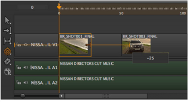

用导航打开主题
的 重定时剪辑 工具允许您修剪剪辑实例的入点或出点，并自动重新计时剪辑以填充新的剪辑实例持续时间。激活 重定时剪辑 通过单击工具或按 R 三次。
单击并将编辑点拖动到新位置并释放，以完成修剪和重定时。例如，将 50 帧剪辑实例修剪为 25 帧会将剪辑重新乘以 200%。

或者，单击编辑点并使用 , (逗号) 或 . (期间) 键或保持 转变 要轻推的 帧增量 设置在查看器下。
提示: 通过持有 Ctrl/Cmd 拖动编辑后，您可以重新计时超过剪辑实例句柄的末尾。